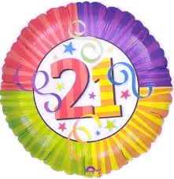

|  | Uitslag 21ste FAMILIEQUIZ (vrijdag 10 februari 2012) |
| Pl | Nr | Ploegnaam | Totaal |
| 1 | 21 | NFP | 100 |
| 2 | 8 | S.CH.O.L | 96 |
| 3 | 46 | de herrezen glorie | 91 |
| 4 | 13 | Roma Victor! | 90 |
| 5 | 2 | Tsjinglepipikoekoek | 89 |
| 6 | 37 | Kleurenwist | 87 |
| 7 | 48 | St. Bernardus Abt 12 | 86 |
| 8 | 38 | de jasmijntjes | 85* |
| 9 | 12 | sjareltje vuylsteke | 85* |
| 10 | 52 | Scouts Hoogland | 85* |
| 11 | 9 | Vat vol kennis | 85* |
| 12 | 39 | NIVO NIHIL | 85* |
| 13 | 19 | De Wissen | 81 |
| 14 | 27 | It's a trap!! | 80 |
| 15 | 45 | De afrekening | 79* |
| 16 | 50 | kwissers zonder naam | 79* |
| 17 | 41 | konijn met pruimen | 78* |
| 18 | 4 | piramisu | 78* |
| 19 | 47 | hete schel | 76 |
| 20 | 44 | Koken met je zus | 75* |
| 21 | 26 | dino's zijn de max! | 75* |
| 22 | 29 | Den John | 73 |
| 23 | 14 | Team Foxtrott | 72* |
| 24 | 20 | Katastroof | 72* |
| 25 | 25 | Blond, slim en knap | 72* |
| 26 | 1 | Mag ik een hulplijn? | 72* |
| 27 | 15 | Learn To Swim | 70 |
| 28 | 3 | een beetje van alles | 69* |
| 29 | 32 | S4 | 69* |
| 30 | 10 | ZonnebloempjeP | 68 |
| 31 | 23 | ZonnebloempjeM | 67 |
| 32 | 7 | THELVILICHED | 65* |
| 33 | 36 | de oempaloempa's | 65* |
| 34 | 42 | ZOLTAN ! | 60 |
| 35 | 17 | ZonnebloempjeN | 59 |
| 36 | 40 | De grote gezinnen | 58 |
| 37 | 28 | stc was zalig | 57 |
| 38 | 16 | Nee wij staan hoger! | 56 |
| 39 | 33 | The Cereal Killers | 54 |
| 40 | 18 | Apaché | 53* |
| 41 | 34 | Oh Oh Zaffelare | 53* |
| 42 | 22 | Van Driessche & co | 51 |
| 43 | 24 | Team SuperSven | 50 |
| 44 | 5 | Jezus Quiztus | 46* |
| 45 | 49 | Kameelaap | 46* |
| 46 | 6 | Kwistet | 44 |
| 47 | 31 | Sardonis | 43 |
| 48 | 43 | Arrééé poezekes!! | 42 |
| 49 | 35 | The Smarties | 41* |
| 51 | 11 | Be Happy Go Lucky | 41* |
| 52 | 30 | wey | 35 |